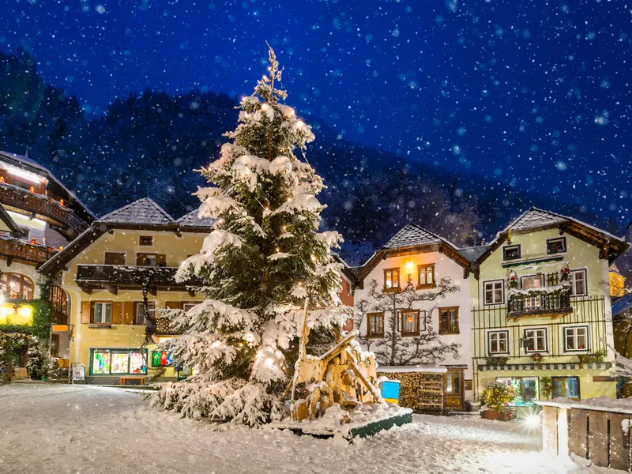

Hallstatt-Ratgeber → Alle Ratgeber
Die beste Reisezeit für Hallstatt: ein Urteil, Monat für Monat
Fast alle Ratschläge zu Hallstatt drehen sich um die Ankunftszeit. Sie sind richtig, und sie stehen in unserem kompletten Reiseführer zum Ort. Aber die Stunde ist Taktik. Die Entscheidung ist der Monat — denn der Monat bestimmt, was überhaupt offen ist, wenn Sie ankommen, und noch so frühes Aufstehen schaltet keine abgestellte Seilbahn ein.
Die kurze Antwort: zweite Maihälfte bis Mitte Juni, und zweite Septemberhälfte bis Ende Oktober. Beides bringt lange Tage, einen laufenden Berg und einen Ort, der abends leer wird. Wenn das nicht geht, handelt der Rest dieser Seite davon, was jeder andere Monat kostet.
Der Ort selbst ändert sich mit dem Monat nicht. Es ändert sich, wie viel vom Berg darüber erreichbar ist — und in den Monaten, in denen die Antwort „wenig“ lautet, muss der Ort den Besuch alleine tragen. Er kann es: der Pickel aus Hirschgeweih, der aus dem Bergwerk kam und auf etwa 5000 v. Chr. datiert wird; der Brand von 1750, der etwa fünfunddreißig Häuser nahm und die Dreifaltigkeitssäule am Marktplatz verschonte; der Friedhof über der Gasse, der einer ganzen europäischen Epoche den Namen gab. Unser Rundgang mit siebzehn Stationen führt in rund neunzig Minuten vom Fähranleger zum Welterbeblick und ist das ganze Jahr verfügbar — das Tempo richten Sie nach dem Wetter und dem Zustand der Wege.

Das Jahr in einer Tabelle
Zur Auslastungsspalte gehört eine ehrliche Vorbemerkung. Hallstatt zählt seine Besucher nicht. Die einzige offizielle Monatsreihe, die existiert, sind Nächtigungen — im Ort gebuchte Nächte, die Statistik Austria je Gemeinde veröffentlicht. Das sind keine Tagesgäste, und die Gasse füllen die Tagesgäste. Lesen Sie die Spalte also als Saisonalität der Betten, was real und publiziert ist, und nicht als Kopfzahl auf der Straße. Eine andere Monatsreihe veröffentlicht niemand, und die Form, die diese beschreibt, passt zu allem anderen, was wir prüfen konnten. Der Index ist der von Statistik Austria selbst, gemessen an ihrem publizierten Monatsdurchschnitt 2024 von 11.621 Nächtigungen.
| Monat | Nächtigungsindex | Tageslicht | Was offen ist | Urteil |
|---|---|---|---|---|
| Jänner | 50 | 8h50 | Bergwerk nur bis 6. Jänner; Museum; Fähre; Ski | Der ruhigste Monat und der mit dem wenigsten oben am Berg |
| Februar | 55 | 10h15 | Museum; Fähre; Ski | Ruhig, aber die asiatischen Ferienreisen fallen hierher |
| März | 60 | 11h50 | Museum; Fähre; Ski bis 29. März | Noch ruhig; die Schneeschmelze ist nicht schön |
| April | 72 | 13h40 | Dachstein erst ab 1. Mai | Ein Glücksspiel — auf 500 Metern kommt der Frühling später |
| Mai | 122 | 15h10 | Der Großteil des Bergs, ab 1. Mai | Unsere Wahl, etwa ab dem 15. |
| Juni | 136 | 16h00 | Alles, ab 4. Juni | Die längsten Tage des Jahres; viel Betrieb, aber noch nicht Hochsaison |
| Juli | 172 | 15h35 | Alles, längste Zeiten | Hochsaison. Nur, wenn der Schulkalender entscheidet |
| August | 182 | 14h15 | Alles, längste Zeiten | Der dichteste Monat des Jahres |
| September | 121 | 12h35 | Alles; die Ausflugsschiffe enden in diesem Monat | Unsere zweite Wahl, etwa ab dem 15. |
| Oktober | 95 | 10h55 | Alles bis 1. November; Herbstfarben | Ausgezeichnet, und der letzte Monat mit vollständig offenem Berg |
| November | 40 | 9h20 | Bergwerk, Museum, Beinhaus; Dachstein ab 2. November zu | Die wenigsten gebuchten Betten im Jahr und die dünnste Liste |
| Dezember | 89 | 8h25 | Bergwerk bis 6. Jänner; Ski ab 4. und 19. Dezember | Zwei verschiedene Dezember — siehe unten |
Zwei Dinge fallen auf. Im August bucht der Ort etwa viereinhalbmal so viele Nächte wie im November — Saisonalität der Quartiere, keine Messung der Menschen in der Gasse. Und der Dezember, den alle für den stillen Monat halten, bucht mehr Nächte als jeder Monat von Jänner bis April.
Wie voll es wirklich wird
Die Zahl, die überall steht, lautet 1,2 Millionen Tagesgäste im Jahr. Es lohnt zu wissen, woher sie kommt, denn sie ist eine Rechnung und keine Zählung. Der Welterbe-Managementplan rechnet Einfahrten in die Ortsparkplätze in Personen um, mit 2,8 Personen pro Auto und 30 pro Reisebus. Auf dieser Grundlage prognostizierte der Bürgermeister für 2025 etwa 1,2 Millionen. Wer mit Bahn und Fähre kommt, steckt darin überhaupt nicht.
Für ein Gefühl für einen einzelnen schlechten Tag: Das Verkehrskonzept 2018 im selben Dokument nennt als maximalen errechneten Tageswert rund 9.000 Personen. Aber die Arithmetik des Plans sagt es besser als jede runde Zahl: Zwischen dem Fähranleger in Lahn und dem nördlichen Fotopunkt leben 237 Menschen, und an einem durchschnittlichen Tag kommen auf jeden von ihnen fast 15 Besucher. An einem Spitzentag fast 40.
Nützlich ist, was sich geändert hat. Reisebusse sind seit 2020 auf 54 pro Tag begrenzt, in Zeitfenster gebucht, mit einer Mindestaufenthaltsdauer von zwei Stunden zwanzig; 2024 sagte der Verkehrsplaner der Gemeinde, die täglichen Buszahlen hätten sich seit 2018 halbiert. Für Autos und Züge gibt es überhaupt keine Quote. Die Menge, die Sie 2027 treffen, ist also weniger eine Wand von Busgruppen um elf als ein gleichmäßiger Autostrom über den ganzen Tag — und so eine Menge dünnt an den Tagesrändern aus, nicht in der Wochenmitte.
Und die Saison selbst hat sich gestreckt. Der Managementplan sagt es unverblümt: Seit 2018 sei der Massentagestourismus in Hallstatt, so der Wortlaut, ein nahezu ganzjähriges Phänomen. Einen ruhigen Monat zu wählen heißt nicht mehr, einen leeren Ort zu wählen, sondern einen, in dem die ruhigen Stunden wirklich ruhig sind.
Die zwei Fenster, für die es sich zu planen lohnt
Mitte Mai bis Mitte Juni. Der Berg kommt in Etappen zurück, nicht auf einmal, und der Index liegt dabei erst ein Fünftel über dem Durchschnitt, während die Tage die längsten des Jahres sind. Mitte Juni steht die Sonne sechzehn Stunden am Himmel und geht nach neun Uhr abends unter. Das ist die beste Kombination, die der Kalender hergibt: offener Berg, langer Abend, und die Juliwelle noch Wochen entfernt.
| Öffnet 2026 | Datum |
|---|---|
| Seilbahnsektionen 1 und 2, die Plattform 5fingers, die Rieseneishöhle | 1. Mai |
| Koppenbrüllerhöhle (schließt schon am 27. September) | 1. Mai |
| Mammuthöhle | 9. Mai |
| Gosaukammbahn, für die Gosausee-Seite | 9. Mai |
| Seilbahnsektion 3, hinauf zur Gjaidalm | 4. Juni |
In den ersten Maitagen haben Sie also die Eishöhle und die Aussichtsplattform, aber nicht die Mammuthöhle und nicht die oberste Seilbahnsektion. Ab 4. Juni läuft alles — und alles in dieser Tabelle steht am 1. November wieder.
Mitte September bis Ende Oktober. Das zweite Fenster tauscht Tageslicht gegen Ruhe, und der Tausch ist schärfer, als er aussieht. Am 15. September sind es noch zwölfeinhalb Stunden Licht, und der Index ist von 182 auf 121 gefallen; im Oktober steht er bei 95 — der einzige Monat des Jahres unter dem Jahresdurchschnitt, während der Berg noch offen ist. Darin besteht das ganze Argument für den Oktober, und man sollte es klar sagen: Bei jedem ruhigeren Monat der Liste sind die Seilbahnen abgeschaltet.
Die Kosten sind real. Der Oktober hat vier Stunden weniger Tageslicht als Mitte Juni, und Fähre, Bergwerk und Standseilbahn verkürzen ab Monatsbeginn ihren Tag, sodass derselbe Plan in eine kleinere Schachtel muss. Dagegen: Die Lärchen färben sich, der See wird still, und im Ort sind etwa ein Fünftel weniger Betten gebucht als im September. Wir würden die erste Monatshälfte nehmen, wegen des Lichts und der besseren Wetterchancen.
Beide Fenster teilen das Entscheidende: Nebensaison bei offenem Berg. Zusammengenommen gibt es diese Kombination rund zehn Wochen im Jahr; der Rest dieser Seite ist eine Reihe von Kompromissen.
Die sechs Wochen, vor denen niemand warnt
Das ist der eine Terminpunkt, auf dem man hereinfällt, und sichtbar wird er erst, wenn man den Kalender selbst zusammenstellt. Jeder Betreiber veröffentlicht seine Saisondaten klar genug. Legt man sie nebeneinander, öffnet sich eine Lücke von fast sechs Wochen, in der der Großteil des Bergs nicht verfügbar ist.
Am 1. November schaltet die gesamte Dachstein-Seite auf einmal ab: alle drei Seilbahnsektionen, Rieseneishöhle, Mammuthöhle, die Plattform 5fingers und die Gosaukammbahn. Der Krippenstein öffnet erst am 19. Dezember 2026 wieder, das Skigebiet Dachstein West am 4. Dezember 2026. Zwischen 2. November und 18. Dezember existiert der große Tag über dem See also nicht, und über diese Lücke veröffentlicht der Betreiber gar nichts — die Daten brechen einfach ab und fangen wieder an.
Das Salzbergwerk verhält sich anders, und hier lagen wir selbst früher falsch. Salzwelten schließt Anfang November nicht. Auf der eigenen Hallstatt-Seite des Betreibers läuft das Bergwerk vom 29. August bis 1. November 2026, letzte Führung 16:30, und dann vom 2. November 2026 bis 6. Jänner 2027, letzte Führung 15:00, geschlossen am 24. und 31. Dezember. Bergwerk und Standseilbahn stehen in zwei getrennten Tabellen: Die letzte Talfahrt der Bahn ist 18:00 und dann 16:30 in denselben zwei Zeiträumen, die letzte Bergfahrt zu einer Führung eine halbe Stunde vor deren Beginn. Ein Hinweis auf Wartung oder Sperre steht auf dieser Seite nicht, und der Skywalk hat weder eigene Zeiten noch einen eigenen Preis — man fährt mit der Standseilbahn hinauf.
Im November behält der Berg also seine eine große Attraktion, sie ist gut, und das Wetter ist ihr gleichgültig. Die kostenpflichtigen Ziele im Ort bleiben ebenfalls offen: das Welterbemuseum täglich für 12 €, das Beinhaus für 2 € zu Winterzeiten. Der November ist dünn, nicht leer.
Das macht ihn zum schärfsten Tauschgeschäft des Jahres. Er bucht mit großem Abstand die wenigsten Betten — Index 40 gegen 182 im August — und ist gleichzeitig der Monat mit dem geringsten Angebot. Wer Hallstatt ohne Menge will und den Berg nicht braucht, nimmt den November. Wer auf Eishöhlen gezählt hat, meidet als einzigen Monat genau diesen.
Der Rand des veröffentlichten Jahres
Die Tabelle von Salzwelten endet am 6. Jänner 2027, danach veröffentlicht der Betreiber nichts — kein Eröffnungsdatum, keine Sperre. Wir schreiben dies im Oktober 2026, und ein Frühjahrsdatum für 2027 steht nirgends. Dasselbe gilt für die Ausflugsschiffe, die der Betreiber als Dienst von Mai bis September beschreibt, ohne Daten zu nennen, und für den Fahrplan der Fähre, der am 13. Dezember 2026 mit dem Fahrplanwechsel ausläuft.
Das sagen wir lieber klar, als zu raten. Wer für Jänner bis April 2027 plant: Das Museum ist das eine große Innenziel mit veröffentlichten täglichen Zeiten — von Jänner bis März 11:00 bis 16:00, letzter Einlass eine Stunde vor Schluss — und alles am Salzberg muss für das eigene Datum beim Betreiber bestätigt werden.

Winter: Das Abendfenster schließt, bevor Sie da sind
Der Standardratschlag für Hallstatt heißt: vor halb zehn oder nach halb fünf im Ort sein, wenn die Tagesgäste weg sind. Im Sommer ist dieses zweite Fenster ein Geschenk. Im Winter ist es überhaupt keines.
Für die Koordinaten des Orts gerechnet, geht die Sonne Mitte Dezember um 16:14 und Mitte Jänner um 16:41 unter, und Hallstatt liegt am Westufer unter einer steilen Wand, sodass die Gasse die direkte Sonne noch früher verliert. Danach hält das diffuse Tageslicht eine Weile, dann kommt die blaue Stunde, die ihre eigene Qualität hat — das ist kein Argument dafür, dass Winterabende nichts wert sind. Es ist ein Argument dafür, dass das lange helle Abendfenster des Sommers im Dezember nicht existiert. Mitte Juni geht die Sonne um 21:05 unter, und die zwei Stunden nach dem letzten Bus sind das beste Licht des Tages; im Dezember sind diese zwei Stunden einfach Nacht.
Die Form des Ratschlags muss sich also mit der Saison ändern. Von etwa April bis Oktober planen Sie den Abend: nachmittags kommen, den Ort um sich herum leer werden lassen, für das Licht bleiben. Von November bis Februar planen Sie stattdessen den Morgen — und das ist keine Heldentat, weil die Sonne im Dezember erst um 07:47 aufgeht.
Monat für Monat, kurz
Jänner bis März. Der ruhigste Abschnitt des Jahres, Index 50 bis 60. Das Bergwerk schließt nach dem 6. Jänner, darüber hinaus ist nichts veröffentlicht. Das Museum ist täglich offen. Die Fähre fährt — sie ist, wie Betreiber und Tourismusverband es formulieren, der einzige planmäßige Schiffsverkehr, der auf einem österreichischen See den Winter durchläuft, und zwar nach demselben Fahrplan wie im August. Ski auf Dachstein West und Krippenstein bis Ende März. Der Februar hat eine Besonderheit: Der Bürgermeister hat gesagt, asiatische Ferienreisen samt Mondneujahr brächten in diesem Monat eine merkliche Welle.
April. Index 72, die Tage schon fast vierzehn Stunden lang, der Berg bis 1. Mai zu. Die Schneeschmelze ist in dieser Höhe braun, nicht grün. Billig und ruhig — und der Monat, den wir von der warmen Jahreshälfte am wenigsten empfehlen.
Mai und Juni. Das erste Fenster, in Etappen: die ersten zwei Seilbahnsektionen, 5fingers und die Rieseneishöhle am 1. Mai, Mammuthöhle und Gosaukammbahn am 9. Mai, die dritte Sektion am 4. Juni. Ab Anfang Juli fahren die Dachsteinbahnen bis sieben Uhr abends, aber im Juni brauchen Sie das nicht: Da arbeitet das Tageslicht für Sie.
Juli und August. Hochsaison, der August der dichteste Monat der Reihe. Die Bahnen fahren am längsten, der See ist warm genug zum Schwimmen. Alles andere an diesen zwei Monaten ist Kosten. Wenn der Schulkalender entscheidet, ist der Trost, dass gerade dann das Abendfenster am weitesten ist: Das Licht hält bis neun.
September. Der Index fällt auf 121 und innerhalb des Monats weiter. Die Ausflugsschiffe hören auf — der Betreiber sagt Mai bis September, der Tourismusverband Mai bis Oktober, ein Datum veröffentlicht niemand; wenn eine Rundfahrt zum Plan gehört, fragen Sie nach. Alles andere läuft.
Oktober. Mit 95 unter dem Jahresdurchschnitt, der Berg bis 1. November offen, und die Herbstfarben, die den klassischen Blick aussehen lassen wie auf den Fotos. Fähre, Bergwerk und Standseilbahn verkürzen ab Monatsbeginn ihren Tag — bauen Sie den Tag früher als im Juni.
November. Nächtigungsindex 40, der Tiefpunkt des Jahres, und die dünnste Liste an Zielen. Siehe oben.
Dezember. Zwei Monate in einem. Bis zum 18. sind Sie in der Lücke: kein Dachstein, Bergwerk auf kurzem Tag, Ski erst ab dem 4. auf Dachstein West. Ab dem 19. öffnet der Krippenstein und der Ort füllt sich: Der Index für den ganzen Dezember ist 89, und Weihnachten und Neujahr hat der Bürgermeister wie Hochsommer beschrieben. Der Christkindlmarkt selbst ist ein einziger Tag, der 8. Dezember, und dazu haben wir einen eigenen Text. Das Bergwerk ist am 24. und 31. geschlossen.
Die Stunde innerhalb des Monats
Ist der Monat entschieden, ist die Stunde einfach, und wir blähen das nicht auf: In der Hochsaison geht die Hauptgasse etwa zwischen zehn und drei Schulter an Schulter und dünnt an beiden Enden aus. Reisebusse dürfen nur zwischen 08:00 und 17:00 einfahren, höchstens zwölf Bewegungen pro Stunde, und müssen mindestens zwei Stunden zwanzig bleiben — die ersten Gruppen können also nicht vor etwa 10:20 abfahren. Das ist der Rhythmus, um den Sie herum arbeiten.
Was keine offizielle Quelle irgendwo veröffentlicht, ist ein stärkster Wochentag oder ein Stundenprofil. Wir haben gesucht. Die Gemeinde gibt es nicht heraus und der Tourismusverband auch nicht; wer Ihnen sagt, dienstags sei es ruhiger als donnerstags, rät. Zum dokumentierten Teil — welche Ziele sich zwischen ruhigen und vollen Stunden am stärksten ändern — siehe Sehenswürdigkeiten in Hallstatt.
Der Ort in den Monaten, in denen der Berg zu ist
Siebzehn Stationen vom Fähranleger zum Welterbeblick, rund neunzig Minuten, Karte und Ton funktionieren offline. Der Pickel aus Hirschgeweih von 5000 v. Chr., der Brand von 1750 und der Friedhof, der einer europäischen Epoche den Namen gab, liegen alle unten am See — deshalb ist ein Novemberbesuch dünner, nicht leerer.
Eine Nacht ändert, welchen Monat Sie brauchen
Hier kommt der Teil, der den ganzen Kalender weicher macht. Alle Kompromisse oben sind die eines Tagesgastes. Bleiben Sie über Nacht, zählt der Monat weniger, weil Sie die zwei ruhigen Fenster jedes Tages unabhängig von der Saison bekommen.
Die Zahlen zeigen, wie wenige das tun. Gegen jene errechnete Million und mehr Tagesgäste brachte 2024 im Ort 138.835 Nächtigungen — Nächte, nicht Personen. Der regionale Tourismusbericht zählt 91.825 Ankünfte im Tourismusjahr 2024/25 bei einer durchschnittlichen Aufenthaltsdauer von eineinhalb Nächten; eine Ankunft ist ein Check-in in einem Quartier, also sind auch das keine 91.825 verschiedenen Personen. Hallstatt hat rund 888 Gästebetten. Wie man die Zahlen auch liest: Wer hier schläft, ist ein kleiner Bruchteil derer, die durchkommen.
Praktisch kauft ein Zimmer im Ort die zwei ruhigsten Teile des Tages, in welchem Monat Sie auch kommen — früher Morgen und später Abend, vor der Ankunft und nach dem Abzug der Tagesgäste. Es heißt auch früh buchen, denn die Betten im Ort sind knapp und der Sommer ist Monate vorher weg; Obertraun gegenüber ist der Überlauf und hat mehr als doppelt so viele Betten wie Hallstatt.
Der andere Hebel ist die Anreise. Ein Auto gibt die größte Freiheit über die eigene Zeit und macht es leicht, Hallstatt mit dem übrigen Salzkammergut zu verbinden, mit zwei Vorbehalten: Der Ort ist für Besucherverkehr gesperrt, Sie parken auf den nummerierten Plätzen an der Zufahrt, und die füllen sich in der Hochsaison früh. Der einzige Weg, die Uhr zu kontrollieren, ist es nicht — am Vorabend kommen oder in Obertraun gegenüber wohnen leistet dasselbe ohne Auto. Was nicht funktioniert, ist ein Tag rund um den Zug, der gerade passt: Der erste brauchbare aus Wien setzt Sie frühestens gegen halb zehn auf den Marktplatz.
Häufige Fragen
Wann ist die beste Reisezeit für Hallstatt?
Zweite Maihälfte bis Mitte Juni oder zweite Septemberhälfte bis Ende Oktober. Beide haben einen laufenden Berg und einen Index deutlich unter der Spitze von Juli und August. Von beiden ist die erste Oktoberhälfte unsere einzige Wahl.
Welcher Monat ist in Hallstatt der ruhigste?
Der November, nach der einzigen Monatsreihe, die überhaupt veröffentlicht wird: Der Nächtigungsindex von Statistik Austria gibt ihm 40 gegen einen Jahresdurchschnitt von 100 und eine Augustspitze von 182. Das misst gebuchte Betten und nicht Menschen in der Gasse — Tagesgäste nach Monaten veröffentlicht keine offizielle Quelle —, aber der Abstand ist groß genug, um etwas zu bedeuten. Der Preis: Die Dachstein-Seilbahnen, die Eishöhlen und die Plattform 5fingers sind vom 2. November bis 19. Dezember alle geschlossen.
Lohnt sich Hallstatt im Winter?
Ja, mit zwei Bedingungen. Wissen Sie, dass die veröffentlichte Saison des Salzbergwerks am 6. Jänner 2027 endet und darüber hinaus nichts publiziert ist, und wissen Sie, dass die Sonne Mitte Dezember um etwa 16:14 untergeht — der übliche Rat, spät am Tag zu kommen, liefert Ihnen also einen dunklen Ort statt eines ruhigen hellen. Planen Sie im Winter den Morgen.
Wie schlimm sind die Menschenmengen in Hallstatt?
Der Ort zählt keine Besucher; er rechnet Einfahrten in die Parkplätze in eine Schätzung um. Auf dieser Grundlage errechnete die Gemeinde für 2025 etwa 1,2 Millionen Tagesgäste, und das Verkehrskonzept 2018 nannte für den dichtesten errechneten Tag rund 9.000 Personen. Die Formulierung des Managementplans selbst ist schärfer: Im Kern leben 237 Menschen, und an einem Spitzentag kommen auf jeden fast 40 Besucher.
Wann ist der Hallstätter Christkindlmarkt?
Nur ein Tag — Dienstag, der 8. Dezember 2026, am Marktplatz, 10:00 bis 18:00 nach dem Eintrag des regionalen Tourismusverbands und 18:30 nach einer anderen seiner Seiten. Es ist keine Adventsaison. Zu diesem Tag gibt es auf dieser Seite einen eigenen Text.
Fährt die Fähre in Hallstatt das ganze Jahr?
Ja, nach einem Fahrplan, der sich mit der Saison nicht ändert. Wichtig ist die Richtung: Die letzte Fahrt vom Ort zum Bahnhof ist 17:45, während 18:30 die letzte Fahrt vom Bahnhof in den Ort ist. Der aktuelle Fahrplan gilt bis 13. Dezember 2026.
Ist Hallstatt in der Nebensaison günstiger?
Die Zimmer deutlich. Die Tickets nicht — Bergwerk und Standseilbahn kosten im November dasselbe wie im Juli, und im Winter zahlen Sie dieselben 29 € für eine Bahn zu einer Plattform, die in der Wolke stehen kann. Gespart wird in der Nebensaison an den Betten, nicht am Berg.
Rundgang Hallstatt – der Audioguide
- 17 Aufnahmen, die Texte stammen von einem Historiker und sind mit Humor geschrieben
- Offline-Karte mit GPS – ohne Datenroaming
- Jederzeit starten, zum Mittagessen anhalten, später weitergehen
- Illustrationen, damit Sie wissen, wovon gerade die Rede ist
- Läuft auf iPhone und Android in der TouringBee-App
Eintritt für Beinhaus, Salzbergwerk und Museum ist nicht enthalten.

Hallstatt mit dem Audioguide gehen — 9,99 €
Das Fazit
Wenn Sie wählen können, wählen Sie die erste Oktoberhälfte, mit Mitte Mai bis Mitte Juni knapp dahinter. Wenn Sie nicht wählen können, zählt der Monat viel weniger als eine Entscheidung darin: ob Sie hier schlafen. Eine Nacht im Ort macht jeden Monat zu einem guten, und keine Terminkunst macht aus einem vierstündigen Augustbesuch einen ruhigen.
Und wenn der Monat feststeht und es der November ist: Fahren Sie trotzdem — aber für den Ort und das Bergwerk, nicht für den Berg, und wissen Sie vor der Buchung, dass die Seilbahnen über dem See nicht laufen.
Daten, Preise, Öffnungssaisonen und die Besucherzahlen auf dieser Seite wurden im Oktober 2026 gegen die Seiten der Betreiber selbst, Statistik Austria, den oberösterreichischen Tourismusbericht und den UNESCO-Welterbe-Managementplan geprüft. Die Saisonen ändern sich hier stärker als an den meisten Orten — bestätigen Sie alles, woran Ihr Tag hängt, für Ihr eigenes Datum. Einige Links sind Affiliate-Links: Wenn Sie darüber buchen, erhalten wir unter Umständen eine kleine Provision, ohne Mehrkosten für Sie. Auf unsere Empfehlungen hat das keinen Einfluss.